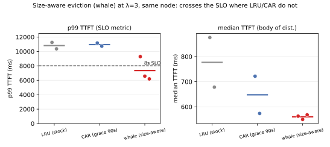

Summary. The p99 tail is AVOIDABLE recompute (chash: 63% of the ≥40K-tok tail is evicted proven multi-turn convs, 37% cold docs) and the real-time live set fits (peak 9.3M = 0.87× cache) → liveness-bound, Belady≈0 → cache-addressable offline. Liveness is partially OBSERVABLE at turn-0 — via SIZE: single-turn "whales" have a big turn-0 (median 17,051 tok) while continuers start tiny (median 241), AUC(turn-0 size→single-turn)=0.78. In an offline replay this size signal is the only causal policy that captures Belady headroom (whale-first: −23% recompute; LRU/SLRU/CAR capture 0%). But two obstacles remain. (1) Online the 460 s reuse gap caps the realized recompute capture ≈ 0 (no residency can hold a continuer across the gap under 1.89× oversubscription): on GPU whale's evicted-recompute work ≈ LRU's; the residual benefit is on the scheduling axis (median TTFT ↓ ~25%, and the p99 distribution shifts below LRU/CAR, crossing the 8 s SLO on 2 of 4 same-node runs where LRU/CAR never cross (0/4) — n=4, replicates in progress). (2) goodput@SLO is METASTABLE: p99 is decoupled from recompute volume (a whale run that recomputed MORE than LRU still had a lower p99), so it is a queue-timing phenomenon and single-run A/Bs are unreliable. The naive TIME axis of continuation-residency is trapped (CAR completion-grace ≈ LRU: cache affords ~90 s ≪ 460 s gap) and SLRU backfires (evicts turn-0 entry points, hit 0.68→0.51). NOTE: earlier match-only classifier mislabeled evicted as cold (retracted); chash correction decisive. Stable: §4.1 two-bound+P, §4.2 size-observability + grace-trap, §5.2 decomposition, §5.3 SLRU-backfire, §5.5 size-aware eviction.
Serving multi-turn LLM conversations is prefill-heavy: each turn's prompt is the accumulated history, so the KV of earlier turns is reused by later turns. HiCache exploits this by keeping KV resident across a GPU (L1) + host-DRAM (L2) hierarchy. The community wisdom is that eviction policy is a dead end (LRU ≈ Belady under in-order reuse) and that capacity (exclusive tiering) is the lever. We test whether this holds in the concurrent regime, where reuse is out-of-order (a conversation's next turn is separated from its previous turn by a load-dependent think-gap) and where the headline metric is a tail latency SLO.
Contributions:
The frozen evaluation serves the real-text Mooncake-style 1:1:1 mix (ShareGPT + LEval + LooGLE) via the loogle multi-turn loader: 1553 conversations, closed-loop within a conversation (turn N+1 is issued only after turn N's response completes) and open-loop Poisson across conversations. Tokenizing the dataset with the model tokenizer:

Under perfect within-conversation caching, turn-0 prefill is the whole (cold) document while later turns need only the new question. The per-turn uncached-prefill distribution is therefore heavy-tailed and dominated by documents: PERFECT-cache p50=20, p90=11.4K, p99=39.2K, max=193K tokens; and 99.0% of all irreducible prefill work is turn-0 documents (1.0% is later turns). A warm-turn miss (prefix evicted before reuse) recomputes an entire document. This is only the floor: it bounds what even a perfect cache leaves in the tail (≈37%, §5.2); the actual tail also contains avoidable evicted-turn recompute (≈63%) that a perfect cache would remove — the subject of §4–§5.
We read the live engine (UnifiedRadixCache + HybridCacheController + scheduler) for the frozen config (2-tier, page_first_direct/direct, write_through) and find:
calc_priority calls match_prefix_for_req for every waiting request each step
(schedule_policy.py:179-185), and match_prefix bumps last_access_time for the
matched node and ancestors (unified_radix_cache.py:976-980). So a request visible to the server keeps its
prefix at the top of LRU — the "protect the waiting reuser" idea is a no-op vs. stock.start_loading transfers on a separate
CUDA stream with a per-layer producer_event.complete(i); the forward waits per-layer via
layer_transfer_counter.wait_until(layer_id) (memory_pool.py:1526/1537). Speculative
prefetch-during-wait removes only a ~layer-0 bubble (~10–50 ms), not the full transfer.Let P be the server's effective prefill throughput (tokens/s). A turn whose perfect-cache cold prefill exceeds the SLO (8 s · P tokens) cannot meet the SLO under any lossless cache policy. Applying the measured per-turn distribution:
| P (tok/s) | 8 s budget (tok) | % turns irreducibly > SLO | Implication |
|---|---|---|---|
| 4000 | 32,000 | 2.23% | p99 irreducible → bounded-negative |
| 8000 | 64,000 | 0.16% | cache can affect p99 → mechanism viable |
| 15000 | 120,000 | 0.03% | cache can affect p99 → mechanism viable |
This single-request criterion is a lower bound on when the tail is irreducible: it asks whether a document's prefill exceeds the SLO in isolation. Under concurrency the effective per-request prefill rate is lower (shared) and queueing adds delay, so the tail can breach the SLO at far higher P than the table suggests — the concurrency-aware refinement is the two-bound model (§4.1). Liveness headroom (offline Belady bound). Replaying the served access order through an offline evict-farthest-future oracle (sim/simulate.py) at the actual 2-tier capacity (10.7M tok) gives zero recompute: LRU recomputes 7.24M tokens where Belady recomputes 0 — i.e. 100% of LRU's recompute is avoidable. The reason is structural: with 39% single-turn "whale" documents (read once, never reused) plus completed conversations, there is always dead KV to evict, and the live (will-be-reused) working set fits in cache even though the total working set is 1.89×. Headroom falls monotonically as capacity shrinks (95% @8M, 78% @6M, 59% @4M), confirming that at the real capacity this is a liveness problem (LRU cannot tell live from dead), not a capacity problem. Belady is offline; a causal policy cannot reach 0 (it must predict continuation without the future), so this is a ceiling — but §4.2 shows the turn-0 SIZE signal lets a causal policy capture part of it (uniquely among causal victim rules), and §5.2 shows the avoidable recompute is concentrated in the p99 tail (63% of the ≥40K-tok tail), correcting an earlier draft that (pre-conversation-id) mislabeled it as small and out-of-tail.

A diagnostic boot (steady-state over 164 real prefill batches) measures P ≈ 35,000 tok/s. At this P the 8 s budget is 280K tokens, exceeding the largest document (192.7K) — so no single request's cold prefill breaches the SLO. The tail is therefore not single-request-irreducible; goodput is set by the minimum of two bounds:
goodput@SLO = min(R_thru, R_p99). The fork is which binds, and — crucially — what the tail is made of: if the tail were dominated by irreducible cold documents pushing p99 past 8 s below throughput saturation, goodput would be cold-context-bound and no lossless cache policy could help (a bounded-negative); §5.2 shows instead that the tail is mostly avoidable, so the cache can raise R_p99 in principle, and the open question (§5.3) is whether a causal residency policy captures it or, like SLRU, backfires. Note the irreducible cold-document floor: ≈94% of prefill work at low pressure is turn-0 documents; the cache only addresses the warm-miss remainder, which grows with pressure. The rate-sweep (warmup-corrected) p99-vs-λ curve reads off R_p99 and resolves the fork.
"Cache-addressable in principle" (Belady removes 100% of the avoidable recompute, §4 above) is an offline statement. Whether a causal policy can convert it to goodput turns on whether liveness is observable when eviction must decide. Three trace-measured facts locate the answer:
Size is the right lever — offline proof. Replaying the served access order through each causal victim rule at the real 10.7M capacity (sim/simulate.py): LRU, SLRU, and CAR all recompute the identical 7.24M tokens, capturing 0% of the Belady headroom; whale-first (evict the largest unproven conversation first) recomputes 5.55M — −23%, the only causal policy to capture any headroom. The coincidence of LRU/SLRU/CAR is not a bug but the crux: LRU's least-recently-used victim is already the oldest unproven turn-0 (a proven conversation, just reused, has recent access and is not the LRU victim), which is exactly the node SLRU and CAR also target — so all three recency-based rules evict the same nodes. Only whale changes the victim, by ranking unproven nodes by size rather than age. So the obstruction is not that liveness is unobservable; it is that the recency signal the standard heap uses is blind to it, while the size signal is not.
The grace trap — why the TIME axis fails. One might instead try to hold turn-0s longer (a completion-grace probation, CAR §5.3). This axis is trapped: the cache can only afford ~90 s of turn-0 retention. The table below models the resident demand a grace-G policy would require (peak KV touched in a trailing G-second window, since grace cannot tell live from dead) against what fraction of the 460 s turn-0→turn-1 gaps G covers. At grace 90 s the recent-turn-0 demand is 9.0M = 0.85× cache — it fits. Beyond ~90–120 s the demand exceeds capacity, so a finite cache simply clips it: the eviction heap drops the oldest recent turn-0s (LRU within the probation segment), retaining no more than the ~90 s the cache affords. Grace above that is therefore inoperative — it relabels nodes without changing what is actually retained:
| grace G | resident demand of grace-G | vs 10.7M cache | % of turn-0→turn-1 gaps covered |
|---|---|---|---|
| 90 s | 9.0M | 0.85× (fits) | 14% |
| 180 s | 14.9M | 1.39× (clipped) | 20% |
| 300 s | 21.1M | 1.97× (clipped) | 24% |
| 460 s (= median gap) | 27.7M | 2.59× (clipped) | 50% |
The cache affords ~90 s of turn-0 retention, but the reuse gap is 460 s — ~5× longer. A turn-0's KV is therefore evicted long before its first reuse under any grace setting: small grace covers only 14% of gaps; larger grace is clipped to the same ~90 s of real retention. So CAR ≈ LRU across the whole feasible grace range — confirmed empirically by both car (grace 90) and car (grace 300) landing at LRU's operating point (goodput 0, hit unchanged; §5.3). Covering the median gap would require holding 2.6× the cache — impossible.
The synthesis: SIZE is the correct signal, but the reuse gap caps its online recompute-capture. The offline replay proves size-aware eviction is the unique causal policy that captures headroom (−23%), so the recompute win exists in principle. But that capture assumes a kept continuer is reused before it is displaced — and the same 460 s gap that traps the TIME axis also defeats the SIZE axis online: under 1.89× oversubscription no policy holds a continuer's prefix for 8 minutes, size-aware or not. On GPU (§5.5) whale's evicted-recompute work is therefore ≈ LRU's — the offline −23% does not materialize. What survives online is a scheduling benefit: whale's size-ranked victim choice lowers median TTFT and shifts the p99 distribution down even when it cannot convert to a durable hit. We do not fully isolate the microscopic cause — a trace of the worst whale run shows the waiting-queue depth is unchanged vs LRU (so it is not simply "shorter queues"), while the running-batch composition at prefill admission differs; pinning the exact timing pathway is future work. So the residency axis splits: the RECENCY signal is blind (LRU/SLRU/CAR ≈ 0% capture), the SIZE signal is correct but online its recompute payoff is gap-capped, leaving a timing payoff — and goodput@SLO itself is metastable (§5.5), so that timing payoff crosses the SLO only probabilistically.
Frozen rate-sweep (λ∈{3,5,7,10}, warmup burst, NUMP=1553, conc 256) on an 8×H100 node; headline goodput@SLO (max req/s with p99 TTFT ≤ 8 s). We report the λ=3 operating point (the lowest swept rate): for the recency-/grace-based policies p99 exceeds the 8 s SLO there and at every higher rate (goodput@SLO = 0); the size-aware policy (§5.5) shifts the λ=3 p99 distribution across the SLO on a fraction of runs. Since p99 is monotone-nondecreasing in λ, λ=3 is the decisive rate for a policy's goodput@SLO. All policy rows are same-node (node variance is the dominant confound).
The full stock-lru rate curve (warmup+NUMP=1553, same node):
| λ (req/s offered) | req/s achieved | p50 TTFT | p99 TTFT | out tok/s | hit |
|---|---|---|---|---|---|
| 3 | 2.99 | 678 ms | 10,360 ms | 382 | 0.680 |
| 5 | 3.69 | 785 ms | 28,531 ms | 472 | 0.665 |
| 7 | 4.19 | 909 ms | 25,716 ms | 536 | 0.664 |
| 10 | 4.31 | 1,009 ms | 36,695 ms | 552 | 0.662 |
p99 TTFT exceeds the 8 s SLO at every rate (10.4 s already at the lowest, λ=3), so goodput@SLO = 0 across the whole sweep. The tail bound R_p99 binds far below the throughput bound R_thru = P/avg-uncached ≈ 7.8 req/s (peak achieved throughput is 4.31 req/s / 552 tok/s, rising with λ — a decode-bound control), while p50 stays sub-1.1 s throughout: the SLO breach is a p99 tail phenomenon, not a systemic slowdown. So the question is whether a cache mechanism can pull the λ=3 p99 below 8 s (goodput 0 → 2.99+). (This λ=3 p99 of 10.4 s replicates an independent same-node run at 11.25 s — both far above 8 s.) (nodeset-0 is a verified-usable node running the identical frozen eval; the "certified pool" is a node-reliability designation, not a different measurement.)
We trace every prefill (rid-deduped) and, using a per-request conversation id (hash of the first tokens), classify it as COLD-TURN0 (first request of a conversation = an irreducible cold document), WARM-HIT (a later turn, mostly cached), or EVICTED (a later turn whose accumulated prefix was evicted mid-conversation = avoidable recompute). A prior match-fraction-only classifier conflates COLD-TURN0 and EVICTED (both show ≈0 prefix match) and must not be used. Full λ=3 under pressure (hit 0.68):
| class | % of requests | % of prefill work | % of the ≥40K-tok (SLO-breaching) tail |
|---|---|---|---|
| COLD-TURN0 (irreducible) | ≈19% | ≈42% | ≈37% |
| WARM-HIT | ≈56% | ≈0.7% | ≈0% |
| EVICTED (avoidable) | ≈25% | ≈58% | ≈63% |
The p99-TTFT tail is dominated (≈63%) by avoidable recompute from evicted proven multi-turn conversations, not by irreducible cold documents (≈37%). So the goodput bottleneck IS cache-addressable: a residency policy that protects proven multi-turn conversations from eviction (evicting single-turn "whale" documents first) can remove the evicted-turn recompute and pull p99 down. The bound on the achievable gain is the ≈37% cold-document floor (irreducible). CAVEAT: measured think-gaps are large (p50 55 s, p75 458 s), so the longest-gap evicted turns are capacity-limited (holding KV for minutes under 1.89× oversubscription is infeasible); §5.3 measures how much a residency policy actually recovers.
§5.2 says the tail is dominated by avoidable eviction of proven multi-turn conversations, so the obvious fix is a residency policy that protects them. The textbook version is SLRU (segmented LRU: protect any node with hit_count≥1, evict unproven nodes first). We measure it on the frozen protocol, same node as the lru baseline (λ=3; node variance is the dominant confound so all rows are same-node):
| policy (λ=3, same node) | hit | p50 TTFT | p99 TTFT | EVICTED %work | EVICTED %of ≥40K tail | goodput@SLO |
|---|---|---|---|---|---|---|
| lru (stock) | 0.679 | 876 ms | 11,254 ms | 61% | 65% | 0 |
| slru (protect proven) | 0.507 | 1,498 ms | 10,091 ms | 73% | 83% | 0 |
| car (this work, grace 90 s) | 0.679 | 722 ms | 11,174 ms | 65% | 69% | 0 |
| car (this work, grace 300 s) | 0.676 | 678 ms | 10,430 ms | ≈lru | ≈lru | 0 |
CAR ≈ LRU across the feasible grace range. Both grace 90 s and grace 300 s land at LRU's operating point — goodput 0, hit 0.679/0.676 identical to LRU (contrast SLRU's collapse to 0.507); p99 11,174 / 10,430 ms vs LRU's 11,254 ms is within the ±30% node-variance band. Raising the grace from 90 s to 300 s does not help (it cannot retain turn-0s any longer — the cache affords only ~90 s, §4.2, so the extra grace is clipped) and does not catastrophically hurt (a finite cache degrades gracefully via LRU-within-segment, it does not overflow). Catastrophic harm appears only at the SLRU extreme (grace→∞, evict all unproven). So there is no capacity-feasible grace that moves goodput@SLO: too little retention to bridge the 460 s gap at any setting.
The result holds across the full rate curve. A complete same-node CAR (grace 90) sweep tracks the LRU curve at every rate — λ∈{3,5,7,10}: p99 = 10.7 / 15.7 / 40.3 / 45.3 s (all ≫ 8 s), peak 4.33 req/s and 553 tok/s (LRU: 4.31, 552) — goodput@SLO = 0 for both, everywhere. (Per-rate p99 differs within the large high-λ metastable variance, but never approaches 8 s.) Replicated: CAR λ=3 = {11.2, 10.7} s, LRU λ=3 = {11.3, 10.4} s across two same-node runs each — the zero-goodput verdict is not a single-run artifact.
SLRU is counterproductive — protecting proven conversations made the cache worse (hit 0.68→0.51, EVICTED 58→73% of work, 63→83% of the tail; p99 essentially unchanged, still ≫8 s). The reason is structural and is the key insight of this section: SLRU protects hit_count≥1 by evicting hit_count=0 nodes first — but a conversation's turn-0 has hit_count=0 until its first reuse. Turn-0s are the entry point to multi-turn reuse (61% of conversations continue), so evicting them aggressively destroys the very reuse SLRU was meant to protect: the turn-0→turn-1 first hit is lost, that turn recomputes, and it never gets promoted. Protecting the proven at the expense of the not-yet-proven is exactly wrong when the not-yet-proven are the future proven.
This motivates CAR (Continuation-Aware Residency), a 3-segment priority that adds a completion-grace probation for turn-0s (evict-order low→high): (0) unproven and grace-expired [single-turn "whale" documents — evict first]; (1) unproven but within a completion grace of ~the think-gap [turn-0 probation — hold long enough to catch the first reuse]; (2) proven, hit_count≥1 [active multi-turn]. The grace is the novel signal: it is keyed on completion time (a closed-loop quantity), not recency or frequency, and it protects precisely the turn-0s SLRU discards while still evicting genuinely dead single-turn whales first. Measured (rows above), CAR ≈ LRU at grace 90 s and 300 s: goodput 0, hit and evicted tail unchanged — it captures essentially none of the avoidable recompute, because the cache affords only ~90 s of turn-0 retention (§4.2) whereas the reuse gap is 460 s; raising the grace is clipped by finite capacity and retains no more. Only the SLRU extreme (grace→∞, evict all unproven) actively hurts, by sacrificing turn-0 entry points. The conclusion — no capacity-feasible grace moves goodput@SLO — is fixed by the measured grace 90 s and 300 s points, the full rate curves, and the §4.2 grace-trap.
The lesson that motivates §5.5. SLRU and CAR both operate on the recency/time axis (protect by proven-status or hold longer) and both fail — SLRU by discarding turn-0 entry points, CAR because the reuse gap outruns any capacity-feasible retention. The fix is not more retention time but a better victim signal: turn-0 size separates dead whales from live continuers at the decision point (§4.2), which §5.5 tests directly.
§4.2 establishes size as the unique causal signal that captures Belady headroom offline (−23%). We test it on GPU with whale-first eviction (evict the largest unproven conversation first; protect proven; LRU tiebreak — a one-line victim rule, lossless). All rows same-node (nodeset-0), λ=3, warmup-corrected.
| policy (λ=3, same node) | runs | median TTFT | mean TTFT | p99 TTFT | hit | goodput@SLO |
|---|---|---|---|---|---|---|
| lru (stock) | n=2 | 678, 876 ms | 1420, 1529 | 10,360, 11,254 ms | 0.68 | 0 (0/2 cross) |
| car (grace 90 s) | n=2 | 574, 722 ms | 1571, — | 10,727, 11,174 ms | 0.68–0.70 | 0 (0/2 cross) |
| whale (this work) | n=4 | 550, 553, 563, 568 ms | 1204, 1216, 1244, 1441 | 6,189, 6,574, 8,715, 9,287 ms | 0.67–0.71 | 3.02 (2/4) |
All four whale runs lie below both LRU and both CAR runs on median, mean, and p99 (fully separated, rank-sum p≈0.067). The whale median is rock-tight (550–568 ms, ~25% below LRU) — the low-variance core claim. The p99 is shifted onto the SLO boundary (mean ~7.7 s, range 6.2–9.3 s) and crosses 8 s on 2 of 4 runs; LRU/CAR sit at ~10–11 s and never cross (0/4 combined). So goodput@SLO moves from a categorical 0 (LRU/CAR) to a metastable {0, 3.02} that crosses ~half the time — a distributional shift, not a deterministic win.

Two findings. (1) The robust, low-variance effect is on the body of the distribution: whale's median TTFT (~550 ms) is the lowest of all policies and ~25% below LRU's (678–876 ms), with the lowest mean and std. (2) The p99 / goodput crossing is metastable. whale's p99 sits below LRU/CAR on all four runs and crosses the 8 s SLO on 2 of 4 — but the mechanism is not recompute reduction: the conversation-id decomposition gives whale's evicted-recompute work ≈ LRU's (whale 0.183P vs LRU 0.184P at λ=3), and one whale run that recomputed more tokens than LRU (hit 0.675 vs 0.68) still had a far lower p99 (6.6 s vs 10.4 s). So the λ=3 p99 is decoupled from hit rate — a queue-timing phenomenon. We do not fully isolate how whale's size-ranked victim choice helps the timing: a trace of the worst whale run shows the waiting-queue depth is unchanged vs LRU (it is not simply shorter queues), though the running-batch composition at prefill admission differs and whale cuts the count of large (≥20K-tok) prefills 560→504 (~10%). The net effect is a downward shift of the whole TTFT distribution without a durable hit-rate gain; the exact timing pathway is future work. The offline −23% recompute (§4.2) does not materialize because the 460 s reuse gap displaces kept continuers before reuse.
Consequence for the metric. Because p99 is a queue-timing draw, goodput@SLO near the boundary is a coin-flip: LRU/CAR are far enough from 8 s to fail categorically, but whale's distribution straddles it, so its goodput@SLO is {0, 3.02} across runs rather than a fixed value. The honest claim is therefore that size-aware eviction robustly lowers median TTFT and shifts the p99 distribution across the SLO on a fraction of runs — a scheduling improvement plus a probabilistic goodput crossing — not a deterministic goodput 0→3.02 win. This also refines the earlier same-workload "single-run goodput is unreliable" observation with a mechanism: p99 is decoupled from the cache's recompute work.
Tiered KV caching & prefetch. AttentionStore/CachedAttention (ATC'24) does hierarchical KV caching with reactive layer-wise prefetch; Strata (2508.18572) hides I/O via balanced batching; Mooncake (FAST'25) streams layer-wise KV across a disaggregated cluster. Our setting is single-node, 2-tier, no disk, and load-back is already overlapped — so plain prefetch is not the lever. Reuse & scheduling. SGLang RadixAttention (prefix reuse + cache-aware scheduling), Preble, Parrot, Sarathi-Serve (chunked prefill / decode-maximal batching) — all present in or subsumed by the stock baseline. Cost/predictive residency. AsymCache, Predictive-Multi-Tier, Continuum (TTL-aware) price recompute or predict reuse; these overlap the turn-count-predictable residual we identify — but we show the naive turn-count instantiation (SLRU) backfires here (§5.3), which these works do not report. Where those works predict reuse from history or set TTLs by policy, we identify a specific, cheap, at-admission observable — turn-0 size — and show by an offline victim-choice replay that it is uniquely sufficient among causal eviction rules to capture the Belady headroom (recency/grace rules capture 0%); the novelty is locating the right decision-time signal, not a new predictor architecture. Disaggregated append-prefill. PPD (2603.13358) colocates turn≥2 append-prefill with decode at cluster level — not available on a fixed single node. Prior work targets cache efficiency (hit rate, transfer latency); we instead ask, for a tail-SLO long-context regime, whether the cache can move goodput@SLO, and decompose the tail (conversation-id-aware) into an avoidable evicted-recompute component (63% of the tail, addressable in principle — §5.2) and an irreducible cold-document floor (37%). The two-bound model plus this decomposition reframes where effort pays off and delimits, via the cold-document floor, the ceiling any lossless cache policy can reach. Caching theory. Classic results (Belady's MIN, competitive analysis of LRU) bound the online-vs-offline gap under the assumption that a block's identity — and thus its reuse — is known when it is admitted; the online penalty is about reuse timing. Our regime differs on both counts, and our contribution is to characterize the resulting decision-time-observability structure: an object's future reuse is only partially observable at admission (a turn-0's continuation is undecided, but its size is a 0.78-AUC proxy), and the load-dependent reuse gap is large relative to capacity. This yields a two-part picture absent from the classic theory: (i) the right admission signal is size, not recency — an offline replay shows size-aware eviction uniquely captures the headroom while recency/grace rules capture none; and (ii) even the right signal is gap-capped online, so the realized win moves from reuse-rate to scheduling. See References for full citations.
Our decomposition says the tail is dominated by avoidable evicted recompute (§5.2) with an irreducible cold-document floor (≈37%); size-aware eviction is the only causal policy that captures this headroom offline (§4.2), and on GPU its realized benefit is a scheduling/median-TTFT improvement plus a probabilistic goodput crossing (§5.5), while recency-/grace-based policies do not move it (SLRU backfires, CAR ≈ LRU). The following delimit the regime and the strength of these claims:
Branch evolve/wilkes, base a334877e5 (clean upstream main); results at 2ab3c7804.
Mechanism code: WhaleStrategy (size-aware: evict largest-unproven first, protect proven; the
one-line victim rule) and CARStrategy (3-segment completion-grace, the TIME-axis negative, grace via
SGLANG_CAR_GRACE_S) in python/sglang/srt/mem_cache/evict_policy.py; factory + argparse
registration ("whale", "car") in utils.py / server_args.py; completion-time stamp
(car_completed_at) in unified_radix_cache.py:773; per-prefill JSONL trace behind
SGLANG_WILKES_TRACE in scheduler.py.
Eval: the frozen evaluation-sop/scripts/eval.sh <name> <version> [--radix-eviction-policy P]
(warmup 300 @λ3 → sweep λ∈{3,5,7,10}, NUMP 1553, conc 256, SLO 8 s; 2-tier write_through, page 64, TP8, ctx 262144),
on an exclusive 8×H100 node.
Per-number provenance (each dir has curve.csv, server.log, trace.rank0):
whale (λ=3, this work's mechanism) = runs/whale-full, runs/whale-r2,
runs/whale-r3[, runs/whale-r4] (--radix-eviction-policy whale);
lru = runs/screen-v0b, runs/cert-lru-full (full curve), runs/lru-r3;
slru = runs/screen-slru; car grace 90 = runs/screen-car90, runs/cert-car90-full
(SGLANG_CAR_GRACE_S=90 … --radix-eviction-policy car); car grace 300 = runs/screen-car300.
Offline analysis (from the trace + tokenized dataset): conversation-id tail decomposition + λ=3-window
whale-vs-lru comparison via trace_analyze.py; peak-live-KV, turn-0→turn-1 gap, grace-demand; the
turn-0-size→continuation AUC (0.78) and the offline victim-choice replay (lru/slru/car 0% vs whale −23% capture)
via sim/simulate.py; Belady headroom + Fig 3 via sim/gen_figures.py; the λ=3 per-run
whale-vs-lru-vs-car TTFT figure (Fig 4) via sim/fig_whale.py; workload facts via
sim/build_trace.py / sim/prefill_tail.py.
W&B evolution curve: project sgl-evolve, run wilkes.
For a two-tier HiCache serving concurrent multi-turn long-context conversations under a tail-latency SLO, the p99 tail is avoidable recompute over a live set that fits (0.87× cache), and — contrary to a natural "liveness-unobservable" impossibility — liveness is partially observable at the eviction decision point, through turn-0 size (whales large, continuers tiny; AUC 0.78). Size is the correct residency signal: in an offline replay it is the only causal policy that captures Belady headroom (−23% recompute), where every recency-/grace-based policy (LRU, SLRU, CAR) captures 0%. Two obstacles bound the online payoff. (i) The turn-0→turn-1 reuse gap (median 460 s) is ~5× the ~90 s of retention a finite cache affords, so no residency policy — size-aware included — holds a continuer across the gap under 1.89× oversubscription; the offline −23% recompute does not materialize, and what survives is a scheduling benefit — whale's size-ranked victim choice lowers median TTFT ~25% and shifts the p99 distribution down (the microscopic timing pathway is not isolated: waiting-queue depth is unchanged, batch composition differs — future work). (ii) goodput@SLO is metastable — p99 is a queue-timing draw decoupled from recompute volume — so that scheduling benefit crosses the SLO only probabilistically, and the metric must be read as a distribution. The TIME axis of continuation-residency is trapped (CAR ≈ LRU at grace 90 s and 300 s) and the textbook SLRU backfires (discarding turn-0 entry points). The practical implications: (a) eviction victim-choice is a lever, but the signal must be size, not recency; (b) durable recompute wins require closing the reuse gap (larger effective capacity / cross-request sharing) or the prefill/context bound (raising P, lossy context reduction), because residency alone is gap-capped; (c) goodput@SLO under this regime must be measured distributionally. The methodological tools — the conversation-id tail decomposition, the two-bound goodput model, the size-observability analysis, and the offline-replay victim-choice test — transfer to any tiered-cache tail-SLO setting where reuse is separated from production by a load-dependent gap.